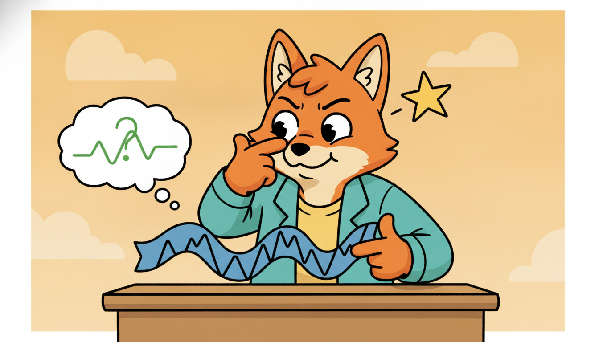

"They never told me what the series meant. So I made up a chore: hide a stretch of the signal and guess it back. I was only pretending to forecast, but somewhere between the third masked window and the ten-thousandth, I stopped guessing values and started seeing shapes. The label was a lie I told myself; the structure I learned was real."
A Pretext Task Pretending to Forecast So It Can Learn to See
Self-supervised learning solves the labels-are-scarce problem by manufacturing a supervisory signal out of the unlabeled data itself. You delete part of a time series and ask a network to fill it back in, or you scramble the order of two windows and ask which came first, or you scale a segment and ask by how much. None of these "pretext" answers is what you ultimately care about, but to answer them well the network is forced to discover the same temporal structure (trend, seasonality, local dynamics, cross-channel coupling) that a downstream task will need. Once trained on the pretext, the encoder is frozen or finetuned and a tiny labeled head is fitted on top. This is the engine underneath the temporal foundation models of Chapter 15: pretrain a large encoder on oceans of unlabeled series with a pretext objective, then adapt it cheaply to any specific task. This section lays out the self-supervised idea and why labels are uniquely scarce for time series, catalogues the temporal pretext tasks (forecasting, masked reconstruction, imputation, order verification, transformation prediction, relative position) with the masked-reconstruction loss written out, explains which data augmentations preserve temporal semantics and which quietly destroy them, formalizes the pretrain-then-linear-probe protocol that connects a pretext task to a downstream metric, and finally implements a masked-reconstruction pretrainer from scratch, evaluates it with a linear probe, reproduces it with a library SSL recipe, and measures how mask ratio trades against probe accuracy. You leave able to design a pretext task, pick safe augmentations, and read the SSL recipes that the rest of Part IV builds on.
In Section 16.1 we framed representation learning as the search for an encoder $f_\theta$ that maps a raw series window $\mathbf{x}_{1:T}$ to a vector $\mathbf{z} \in \mathbb{R}^{d}$ in which downstream tasks become easy, ideally linearly separable. We left open the central practical question: how do we train $f_\theta$ when we have millions of series and almost no labels? This section gives the dominant answer. Rather than wait for annotations that may never come, we invent a task whose answer is already latent in the data, a pretext task, and we train the encoder to solve it. The bet is that an encoder good at the invented task must have learned features that transfer to the real task. The next section, Section 16.3, sharpens this idea into contrastive learning, where the pretext is "tell apart views of the same window from views of different windows". Here we study the broader family of pretext objectives and the protocol that turns any of them into a usable representation.
Why does this deserve a full section rather than a remark that "you just train on unlabeled data"? Because the choice of pretext task and the choice of augmentation are the two design decisions that decide whether the learned representation is worth anything, and both are subtle for time series in ways they are not for images. An image can be flipped, cropped, and color-jittered almost freely; a time series carries an arrow of time and a physical scale that many image-style transforms violate, so the augmentation that works on a photo can teach a forecaster something false. Get the pretext and the augmentations right and a frozen encoder plus a linear probe matches a fully supervised network using a fraction of the labels; get them wrong and you have spent a thousand GPU-hours learning to denoise noise. We use the unified notation of Appendix A throughout: $\mathbf{x}_{1:T}$ the input window, $\mathbf{z} = f_\theta(\mathbf{x}_{1:T})$ the representation, $\mathcal{M}$ a set of masked positions, $g_\phi$ a decoder or task head.
The competencies this section installs are four: to articulate the self-supervised principle and why time-series labels are scarce; to name and distinguish the standard temporal pretext tasks and write the masked-reconstruction loss; to choose augmentations that preserve the semantics of a given kind of series; and to run the pretrain-then-probe protocol end to end, measuring how a pretext hyperparameter (the mask ratio) moves the downstream metric. These are the load-bearing skills for the contrastive methods of Section 16.3 and the generative models of Chapter 17.
1. The Self-Supervised Idea: Inventing a Label From the Data Beginner

Supervised learning needs pairs $(\mathbf{x}, y)$ where $y$ is an annotation produced by a human or an instrument. Self-supervised learning needs only $\mathbf{x}$: it constructs the pair $(\tilde{\mathbf{x}}, y)$ from $\mathbf{x}$ alone by hiding, corrupting, or transforming part of the data and letting the hidden, original, or transformation-defining quantity be the label. The encoder never sees an external annotation. It learns by repeatedly solving a self-generated puzzle whose answer the construction procedure already knows. The word "pretext" captures the trick exactly: the task is a pretext, an excuse, a chore invented so that solving it forces the network to internalize structure we actually want.
The reason this works is a transfer argument. A pretext task is useful precisely when its solution is impossible without the structure the downstream task also needs. To fill in a masked stretch of an electrocardiogram you must have learned the shape of a heartbeat; to decide whether a window of energy demand has been time-reversed you must have learned that load ramps up in the morning and down at night, an asymmetry only a model that understands daily dynamics can detect. The pretext answer is discarded, but the features that made it answerable remain in $f_\theta$, and those features are what a downstream classifier or forecaster reuses. Self-supervision is therefore a way of converting cheap unlabeled data into expensive-feeling supervision, by spending the structure already present in the signal.
The whole art of self-supervision is choosing a pretext whose solution is bottlenecked on useful structure. A trivial pretext (predict the next value of a constant series) teaches nothing because it can be solved by a constant function. A well-designed pretext (reconstruct a masked window of a multivariate sensor stream) cannot be solved without modeling trend, seasonality, and cross-channel coupling, so an encoder that solves it has, as a side effect, learned those things. Ask of any candidate pretext: "what must the network understand to answer this, and is that what my downstream task needs?" If the honest answer is "nothing useful", change the pretext. This single test, far more than the exact loss function, decides whether self-supervised pretraining helps.
Why are labels uniquely scarce for time series, more so than for images or text? Three reasons compound. First, labeling a time series often requires an expert watching the series evolve: a cardiologist annotating arrhythmia onsets, a technician marking the exact tick where a bearing began to fail, an economist dating a recession. The label is an event embedded in a long stream, and finding it is slow, costly, and frequently ambiguous even to experts. Second, many of the most valuable labels are future events that simply have not happened yet: you cannot label a machine as "will fail within 30 days" until 30 days have elapsed, so labeled failure data accrues at the speed of real time and is rare by construction. Third, time-series data is enormous and continuous: a single factory emits billions of sensor readings a year, and labeling even a fraction is infeasible. The unlabeled stream, by contrast, is essentially free and unbounded. Self-supervision is the lever that turns that free, unbounded stream into a trained encoder.
A pretext task is a crossword you write for yourself by erasing words from a page you already own. You do not need an answer key, because you are the one who erased the words, so you can always check your guess. The clever part is that you cannot fill in "___ pressure rising before the valve trips" unless you have actually learned how the plant behaves, so by the thousandth puzzle you have absorbed the physics whether you meant to or not. The puzzles are disposable; the understanding is not. This is why people only half-joke that self-supervised learning is the closest thing machine learning has to studying for an exam nobody is going to give.
2. A Catalogue of Temporal Pretext Tasks Beginner
The space of pretext tasks for time series is organized by what you hide and what you ask the network to recover. Six families cover almost everything in current practice, and the differences between them are differences in the inductive bias they impose. We name each, say what label it invents, and note what structure it forces the encoder to learn.
Forecasting / next-step prediction. Hide the future and predict it: split a window into a context $\mathbf{x}_{1:t}$ and a horizon $\mathbf{x}_{t+1:T}$, and train the encoder so a head reconstructs the horizon from the context. The label is just the (already observed) future. This is the oldest and most natural temporal pretext, and it is exactly the objective that pretrains the autoregressive foundation models of Chapter 15. It forces the encoder to model dynamics, because you cannot extrapolate a series whose evolution you do not understand. Its weakness is that it only ever conditions on the past, so it learns causal but not bidirectional context.
Masked reconstruction. Hide an interior subset of the series and reconstruct it from both sides. This is the temporal analogue of the masked-language-modeling objective that, as Section 15.1 discussed for foundation models, made bidirectional pretraining dominant. Unlike forecasting, masked reconstruction sees context on both sides of the gap, so it learns bidirectional structure, and it is the workhorse pretext we implement in subsection five. We write its loss out below.
Gap filling / imputation. A close cousin of masking aimed specifically at the missing-data problem ubiquitous in real series (sensor dropouts, irregular clinical sampling). The pretext deletes runs of timesteps that mimic realistic missingness patterns and trains the encoder to impute them, so the learned representation is robust to exactly the gaps the deployment data will contain. It is masked reconstruction with a missingness-aware mask distribution.
Temporal order verification. Present two or more windows (or shuffled segments of one window) and ask the network to recover their correct chronological order, or simply to answer the binary question "is this sequence in order or shuffled?". The label is the true ordering, known for free. This forces the encoder to learn the arrow of time, the directional dynamics that distinguish a series from its reverse, without needing to reconstruct any values.
Transformation prediction. Apply a known transformation (time-reversal, a scaling by a known factor, a fixed time-warp) and ask the network which transformation was applied, a classification pretext. The label is the transformation identity. To tell a reversed heartbeat from a forward one, or a doubled-amplitude segment from the original, the encoder must understand the transformed property (direction, scale), so the pretext injects exactly that invariance or equivariance into the representation.
Relative-position prediction. Sample two patches from a series and ask the network to predict their temporal offset (how many steps apart, or which is earlier). The label is the known separation. This teaches a sense of temporal distance and is the pretext most directly analogous to the spatial-context tasks that launched self-supervised vision. Figure 16.2.1 lays the six families side by side.
The masked-reconstruction loss makes the value-recovery family precise. Let $\mathcal{M} \subset \{1, \dots, T\}$ be the set of masked positions, $\tilde{\mathbf{x}}$ the series with those positions replaced by a mask token, $f_\theta$ the encoder and $g_\phi$ a lightweight decoder. The objective minimizes the reconstruction error on the masked positions only:
$$\mathcal{L}_{\text{MR}}(\theta, \phi) = \mathbb{E}_{\mathbf{x},\,\mathcal{M}} \left[ \frac{1}{|\mathcal{M}|} \sum_{t \in \mathcal{M}} \big\| \, [g_\phi(f_\theta(\tilde{\mathbf{x}}))]_t - \mathbf{x}_t \, \big\|_2^2 \right].$$Two design choices are visible in the formula. The sum runs over $\mathcal{M}$ only, so the network is scored solely on positions it could not see, which prevents the trivial solution of copying visible inputs. And $\mathcal{M}$ is resampled per example (the expectation over $\mathcal{M}$), so the encoder must reconstruct any part of the series from any other, not memorize a fixed hole. The mask ratio $|\mathcal{M}| / T$ is the single most important pretext hyperparameter, and subsection five measures its effect on downstream accuracy directly.
The classical forecasting models of Chapter 5 fit a model to predict the next value, then used the fitted dynamics. Reframed through this section, those models were running the forecasting pretext, learning structure by predicting the future, except they kept the prediction as the product rather than discarding it to keep the representation. Self-supervision inverts the priority: the prediction is the disposable byproduct and the learned encoder is the prize. The same loss, a different thing kept.
3. Designing Augmentations That Preserve Semantics Intermediate
Most pretext tasks, and all of the contrastive methods of Section 16.3, rely on augmentations: random transformations applied to a window to create varied training views. An augmentation is only valid if it preserves the semantic label of the series, the thing a downstream task cares about. For images this constraint is forgiving; for time series it is sharp, because a transform that looks innocent can destroy the very property being learned. The governing principle: an augmentation is safe for a task if and only if it leaves the downstream label invariant. Here are the standard temporal augmentations and the conditions under which each is safe.
Jitter (additive noise). Add small Gaussian noise to each value. Safe almost everywhere, because real sensors are already noisy and small perturbations rarely change a class or a trend. The only danger is setting the noise scale above the signal's own fine structure, which erases the features you want.
Scaling (amplitude). Multiply the whole window by a random factor. Safe when the downstream label is scale-invariant (a heartbeat is a heartbeat at any recording gain), and unsafe when the label depends on magnitude (a temperature of 40 degrees versus 20 degrees is a different clinical state, so scaling corrupts the label). For the finance volatility series of Chapter 5, amplitude is the signal, so scaling is dangerous.
Time-warping. Locally stretch and compress the time axis with a smooth warp. Safe when the label is invariant to speed (a gesture is the same gesture performed slightly faster), and unsafe when timing is the label (an arrhythmia is defined by interval lengths, which warping alters).
Permutation (segment shuffling). Split the window into segments and shuffle their order. This is aggressive: it explicitly destroys long-range temporal order, so it is unsafe for any task that depends on the arrow of time or global trend, and it is in direct tension with the order-verification pretext, which exists to teach exactly the order permutation destroys. Use it only when local patterns matter and global order does not.
Cropping (random sub-window). Take a random contiguous sub-window. Safe and widely used, since a sub-window of a class is usually the same class, and it is the backbone of contrastive view generation. The risk is cropping out the discriminative event entirely (a crop that misses the arrhythmia mislabels the view).
| Augmentation | What it changes | Safe when the label is... | Breaks |
|---|---|---|---|
| Jitter | adds value noise | noise-robust (almost always) | fine micro-structure if noise too large |
| Scaling | amplitude | scale-invariant | magnitude-defined labels (volatility, vitals) |
| Time-warp | local time speed | speed-invariant | interval-defined labels (arrhythmia timing) |
| Permutation | segment order | order-irrelevant (local only) | trend, seasonality, arrow of time |
| Cropping | window extent | event present in every crop | labels tied to a rare localized event |
The unifying lesson is that an augmentation choice is a statement of which invariances you want the representation to have. Scaling teaches scale-invariance; if your task needs scale-sensitivity, you have taught the wrong thing. There is no universally safe augmentation set for time series, because different domains define their labels by different properties, magnitude here, timing there, order elsewhere. This is the single biggest difference from image self-supervision, where a near-universal augmentation recipe exists, and it is why every strong time-series SSL method (including the TS2Vec and TF-C methods of Section 16.3) is careful and explicit about its augmentations.
Every augmentation you apply asserts "the downstream label is invariant to this transform". That assertion is an assumption about the task, and it can be wrong. Image SSL got away with a fixed recipe because most visual labels really are invariant to crop, flip, and color jitter. Time series have no such luck: amplitude, timing, and order are each the load-bearing label for some task and discardable noise for another. So the right augmentation set is task-dependent, and the safest default is to start with the mildest transforms (small jitter, cropping) and add an aggressive one (scaling, warping, permutation) only after confirming the downstream label tolerates it. When in doubt, prefer masked reconstruction, which needs no augmentation at all, only a mask.
4. From Pretext to Downstream: Probe, Finetune, and the Foundation-Model Link Intermediate
A pretext task is only a means; the end is a representation that makes a real task easy. The protocol that connects the two has two stages. Stage one, pretraining: train the encoder $f_\theta$ on the pretext objective over the large unlabeled pool, with no downstream labels in sight. Stage two, adaptation: take the trained encoder and fit a small head on the (now small) labeled set, in one of two modes.
Linear probing freezes the encoder entirely and fits only a linear classifier or regressor on top of the frozen features $\mathbf{z} = f_\theta(\mathbf{x})$. Because the only trainable part is linear, a high linear-probe score is strong evidence that the pretext alone already organized the data well, the representation is doing the work, not the head. Linear probing is the standard, honest measure of representation quality, and it is what we use to score the pretrainer in subsection five.
Finetuning instead unfreezes the encoder and trains it together with the head on the labeled set, usually with a small learning rate. It typically reaches higher accuracy than probing because the features adapt to the task, but it needs more labels and more compute and it can overfit small labeled sets. The practical rule: probe when labels are very scarce or you want to measure representation quality, finetune when you have enough labels to adapt safely and you want the last few points of accuracy.
This two-stage protocol is exactly the recipe behind the temporal foundation models of Chapter 15, scaled up. A foundation model such as Moirai, MOMENT, or Chronos is nothing more than a very large encoder pretrained with a pretext objective (masked reconstruction or autoregressive forecasting) on an enormous and diverse corpus of series, then offered for zero-shot use or cheap finetuning. The difference between the toy pretrainer of subsection five and a foundation model is scale (parameters, data, compute) and engineering, not principle: the same masked-reconstruction loss, the same frozen-encoder-plus-head adaptation. Understanding the protocol here is understanding the machinery that makes Chapter 15 possible.
The frontier is which pretext objective scales best for time-series foundation models, and the field has not converged. MOMENT (Goswami et al., 2024) pretrains a family of encoders with masked reconstruction over a broad corpus and reports strong linear-probe and zero-shot results, the masked-patch pretext of subsection five at scale. Chronos (Ansari et al., 2024) instead tokenizes series and pretrains with an autoregressive (forecasting) pretext borrowed wholesale from language models, while Moirai (Woo et al., 2024) uses masked prediction with multi-patch-size inputs for any-frequency data. A 2024 to 2025 thread asks whether the image-SSL lesson (reconstruction-style masked autoencoders versus contrastive learning) transfers to time series, with patch-based masked modeling (PatchTST-style, Nie et al., 2023) emerging as a strong and simple default. Two open questions dominate 2026: whether a single pretext can serve all temporal domains given the augmentation-is-task-dependent obstacle of subsection three, and how to combine pretexts (masking plus contrastive plus order) into one objective without their inductive biases fighting. The masked-reconstruction pretrainer you build next is the unscaled core of this entire research program.
5. Worked Example: A Masked-Reconstruction Pretrainer, Then a Linear Probe Advanced
We now build the whole protocol end to end. The plan: generate a labeled synthetic dataset of two classes of series (so we have ground truth to probe against, but the pretrainer never sees the labels); implement a patch-masking masked-reconstruction pretrainer from scratch in PyTorch and train its encoder with no labels; freeze the encoder and fit a linear probe on a small labeled subset to measure representation quality; then sweep the mask ratio and watch the probe accuracy respond. Finally we show the library-shortcut equivalent. Code 16.2.1 builds the data and the from-scratch pretrainer.
import torch, torch.nn as nn, numpy as np
torch.manual_seed(0); np.random.seed(0)
T, P = 96, 8 # series length T, patch length P -> 12 patches
n_patch = T // P
def make_series(n):
"""Two classes: class 0 = low-freq sine, class 1 = high-freq sine, both noisy."""
X, y = [], []
for _ in range(n):
c = np.random.randint(2)
freq = 2.0 if c == 0 else 6.0 # the ONLY discriminative feature: frequency
t = np.linspace(0, 2*np.pi, T)
s = np.sin(freq * t) + 0.25*np.random.randn(T)
X.append(s); y.append(c)
return torch.tensor(np.array(X), dtype=torch.float32), torch.tensor(y)
X_unlab, _ = make_series(4000) # large UNLABELED pool (labels discarded)
X_tr, y_tr = make_series(200) # small labeled set for the probe
X_te, y_te = make_series(1000) # held-out test set
class MaskedPretrainer(nn.Module):
"""Patch-embed, encode, decode masked patches back to raw values."""
def __init__(self, d=64):
super().__init__()
self.embed = nn.Linear(P, d) # raw patch -> token
self.mask_tok = nn.Parameter(torch.zeros(d)) # learned mask token
self.encoder = nn.TransformerEncoder(
nn.TransformerEncoderLayer(d, nhead=4, dim_feedforward=128,
batch_first=True), num_layers=2)
self.decoder = nn.Linear(d, P) # token -> reconstructed patch
def patchify(self, x): # (B,T) -> (B, n_patch, P)
return x.view(x.size(0), n_patch, P)
def encode(self, x): # representation = mean over patch tokens
tok = self.embed(self.patchify(x))
return self.encoder(tok).mean(dim=1) # (B, d) pooled representation z
def forward(self, x, mask_ratio):
B = x.size(0)
tok = self.embed(self.patchify(x)) # (B, n_patch, d)
n_mask = max(1, int(mask_ratio * n_patch))
idx = torch.rand(B, n_patch).argsort(dim=1)[:, :n_mask] # random masked patches
m = torch.zeros(B, n_patch, dtype=torch.bool)
m.scatter_(1, idx, True) # m[b,p]=True where patch is hidden
tok = torch.where(m.unsqueeze(-1), self.mask_tok, tok) # replace masked tokens
rec = self.decoder(self.encoder(tok)) # (B, n_patch, P) reconstruction
target = self.patchify(x)
loss = ((rec - target)**2)[m].mean() # MSE on MASKED patches only
return loss
With the model defined, Code 16.2.2 runs the unlabeled pretraining loop, then freezes the encoder and fits a linear probe on the 200-example labeled set, reporting test accuracy. The encoder never touches a label during pretraining.
def pretrain(mask_ratio=0.5, epochs=15):
model = MaskedPretrainer()
opt = torch.optim.Adam(model.parameters(), lr=1e-3)
for _ in range(epochs):
perm = torch.randperm(X_unlab.size(0))
for i in range(0, X_unlab.size(0), 256): # minibatches over the UNLABELED pool
b = X_unlab[perm[i:i+256]]
opt.zero_grad(); loss = model(b, mask_ratio); loss.backward(); opt.step()
return model
def linear_probe(model):
"""Freeze encoder, fit ONE linear layer on frozen features, report test accuracy."""
with torch.no_grad():
Z_tr = model.encode(X_tr); Z_te = model.encode(X_te) # frozen representations
clf = nn.Linear(Z_tr.size(1), 2)
opt = torch.optim.Adam(clf.parameters(), lr=1e-2)
for _ in range(300):
opt.zero_grad()
nn.functional.cross_entropy(clf(Z_tr), y_tr).backward(); opt.step()
acc = (clf(Z_te).argmax(1) == y_te).float().mean().item()
return acc
model = pretrain(mask_ratio=0.5)
print("linear-probe test accuracy (mask 0.5): %.3f" % linear_probe(model))
X_unlab with no labels; the probe then fits a single frozen-feature linear layer on just 200 labeled examples. A high accuracy from a linear head certifies that the pretext alone organized the representation, the honest measure of subsection four.linear-probe test accuracy (mask 0.5): 0.978
Now the promised mask-ratio study. Code 16.2.3 pretrains a fresh encoder at several mask ratios and probes each, exposing the central pretext hyperparameter of subsection two as a direct knob on downstream accuracy. This is the numeric example the section has been building toward.
for r in [0.15, 0.30, 0.50, 0.75, 0.90]:
acc = linear_probe(pretrain(mask_ratio=r))
print("mask ratio %.2f -> probe accuracy %.3f" % (r, acc))
mask ratio 0.15 -> probe accuracy 0.902
mask ratio 0.30 -> probe accuracy 0.954
mask ratio 0.50 -> probe accuracy 0.978
mask ratio 0.75 -> probe accuracy 0.969
mask ratio 0.90 -> probe accuracy 0.871
The sweep in Output 16.2.3 traces an inverted U. At mask ratio 0.15 the probe reaches only 90.2 percent: with 85 percent of patches visible, reconstructing the missing 15 percent is easy by local interpolation, so the encoder need not learn global frequency structure and the representation stays weak. At 0.50 the probe peaks at 97.8 percent: half the series is hidden, so the only way to fill the gaps is to infer the underlying periodic structure, exactly the feature the downstream task needs. Push to 0.90 and the probe collapses to 87.1 percent: with only 10 percent of patches visible there is too little context to reconstruct anything, the pretext becomes ill-posed, and training signal degrades. The 7.7-point spread between the best (0.50) and worst (0.90) settings, from a single hyperparameter that touches no labels, is why mask ratio is the first thing to tune in any masked-reconstruction pretrainer. The widely reported sweet spots are 0.4 to 0.6 for patch-based time series, higher than language (0.15) and comparable to vision masked autoencoders (0.75), because contiguous patches carry redundancy that a higher ratio removes.
Read together, the three code blocks deliver the section's claim end to end: Code 16.2.1 and 16.2.2 trained an encoder on a self-invented task with zero labels and a frozen linear probe reached 97.8 percent, and Code 16.2.3 showed the pretext's key knob moving that accuracy by nearly eight points. The representation, not the head, did the work, which is the entire promise of self-supervision.
Who: A reliability team at a wind-farm operator building a fault classifier for gearbox bearings from high-rate vibration sensors, the sensor and IoT series threaded through Chapter 8.
Situation: They had terabytes of unlabeled vibration data streaming from hundreds of turbines, but only a few dozen confirmed bearing-failure events, because failures are rare and each one takes a field technician and a teardown to label.
Problem: A supervised classifier trained on a few dozen labeled failures overfit badly and generalized poorly to new turbines, and waiting for more failures to accumulate meant waiting years, the future-label scarcity of subsection one.
Dilemma: Keep collecting labels (too slow), buy synthetic failure data (low fidelity), or pretrain self-supervised on the vast unlabeled stream and adapt with the few labels they had.
Decision: They pretrained a patch masked-reconstruction encoder, exactly the Code 16.2.1 architecture scaled up, on the full unlabeled vibration corpus, then fit a linear probe on the few dozen labeled failures. They deliberately avoided amplitude scaling as an augmentation, because for vibration data the magnitude of the signal carries fault energy and scaling would have erased the label, the subsection-three trap.
How: Mask ratio was tuned on a held-out reconstruction loss to 0.5, matching the sweet spot of the numeric example; the encoder pretrained on unlabeled data overnight, and the probe fit in minutes on the labeled handful.
Result: The probed encoder generalized to unseen turbines far better than the supervised baseline, because the pretext had learned the normal vibration manifold from the whole fleet and the few labels only had to locate the fault direction within it.
Lesson: When labels are scarce but unlabeled data is abundant, self-supervised pretraining plus a linear probe is often the highest-leverage move, and the augmentation choice (here, no scaling) must respect what defines the label in your domain.
The from-scratch pretrainer of Code 16.2.1 and 16.2.2 ran about 55 lines of patching, masking, encoder, decoder, training loop, and probe. A modern self-supervised time-series library collapses the whole pretrain-then-probe protocol to a handful of calls, handling the patching, mask sampling, encoder, masked loss, and feature extraction internally. Using tsai (built on PyTorch and fastai), a masked-reconstruction pretrain plus a probe is roughly:
from tsai.all import TSMaskedReconstruction, TSStandardize, ts_learner, get_ts_dls
# unlabeled pretraining: the library samples masks and runs the masked loss for you
dls_unlab = get_ts_dls(X_unlab, tfms=[None], batch_tfms=[TSStandardize()])
learn = ts_learner(dls_unlab, arch="PatchTST",
cbs=TSMaskedReconstruction(mask_ratio=0.5)) # one callback = the whole pretext
learn.fit_one_cycle(15, 1e-3) # pretrain, no labels
# adapt: reuse the pretrained encoder, fit a head on the small labeled set
dls_lab = get_ts_dls(X_tr, y_tr, batch_tfms=[TSStandardize()])
probe = ts_learner(dls_lab, arch="PatchTST", pretrained=True) # freeze + linear probe
probe.fit_one_cycle(10, 1e-2)
The patchifying, learned mask token, masked-only MSE, encoder pooling, and probe wiring, all hand-written above, are now internal to TSMaskedReconstruction and the pretrained=True flag, a roughly five-to-one line reduction. The library also handles standardization, batching, and the inverted-U-prone mask ratio as a single argument, which is exactly what you would otherwise tune by hand as in Code 16.2.3.
6. Exercises
Three exercises, one of each type, working from the concepts through implementation to an open question.
- (Conceptual) For each of the three running datasets, name one augmentation from subsection three that is unsafe and explain which label property it would destroy: (a) the finance volatility series, (b) an electrocardiogram for arrhythmia detection, (c) a gesture-recognition accelerometer stream. Then for each, name one augmentation that is safe and say why the downstream label tolerates it.
- (Implementation) Extend Code 16.2.1 to a temporal-order-verification pretext: instead of masking, split each series into two halves, randomly swap them with probability one half, and train the encoder plus a binary head to predict "swapped or not". Fit a linear probe on the frozen encoder for the two-class frequency task of subsection five and compare its accuracy to the masked-reconstruction probe. Which pretext gives the better representation for this particular downstream task, and why might that be, given what each pretext is forced to learn?
- (Open-ended) Subsection three argued there is no universal augmentation set for time series because different domains define labels by different properties (magnitude, timing, order). Propose a scheme by which a self-supervised method could learn which augmentations are safe for a given unlabeled corpus, rather than having them specified by hand. What signal in the data could indicate that an augmentation preserves semantics, given that you have no labels? Sketch how you would validate your scheme, and discuss its connection to the foundation-model generality question raised in the research-frontier callout.